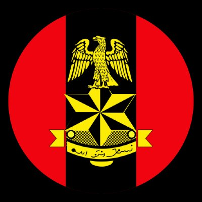
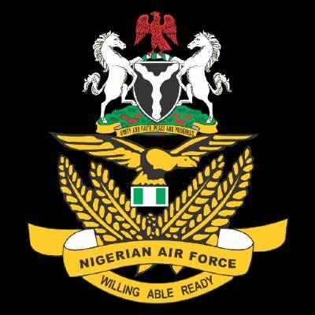

The Nigerian Armed Forces.
Four components form the operational and command structure of Nigeria's military: the Defence Headquarters and the three Services — Army, Navy and Air Force.
Defence Headquarters.
The Defence Headquarters (DHQ) coordinates joint operations across the three Services. It is led by the Chief of Defence Staff (CDS), with the three Service Chiefs as principal advisers.
DHQ runs the Theatre Commands of Operation HADIN KAI (North-East), Operation FANSAN YAMMA (North-West), Operation DELTA SAFE (Niger Delta) and others — and is the command authority for all joint task forces.
Visit defencehq.mil.ngDefence Headquarters
Joint operational command of the Armed Forces
Nigerian Army
Land ComponentThe Nigerian Army.
The land service of the Federal Republic, with statutory responsibility for the defence of Nigerian territory, internal security operations in aid of civil authority, and contributions to peacekeeping.
The Nigerian Army is headed by the Chief of Army Staff (COAS) and structured into infantry divisions, mechanised formations, special operations, engineers, signals, supply, medical and corps support, with Headquarters in Abuja.
Visit army.mil.ng
Nigerian Air Force
Air ComponentThe Nigerian Air Force.
The air service of the Federal Republic, providing air supremacy, close air support, strategic and tactical airlift, intelligence, surveillance and reconnaissance (ISR).
Headed by the Chief of the Air Staff (CAS), the Air Force operates a mixed fleet of fighter, attack, training, transport and helicopter platforms from bases including Makurdi, Kaduna, Maiduguri, Port Harcourt and Lagos.
Visit airforce.mil.ng